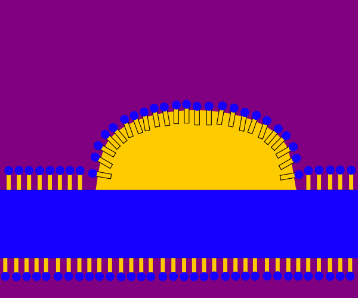
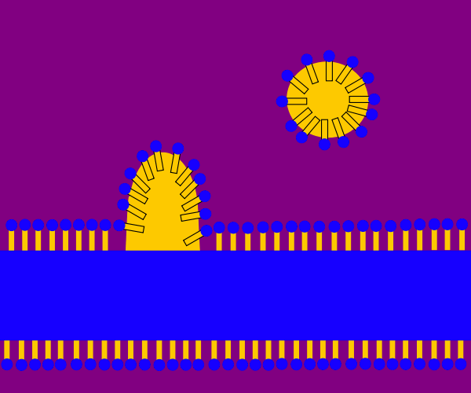
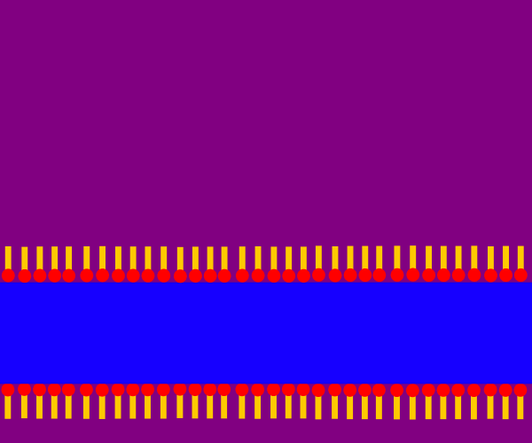

Damit das anionische Tensid anionisch bleibt und nicht protoniert wird,
wird meist eine leicht alkalische Wasch"lauge" gewählt.
Die Tensidmoleküle lagern sich mit ihrer lipophilen Schwanzgruppe an
der Faser an und verbessern so die Benetzbarkeit.
(Vgl. Grenzflächenaktivität > Verbesserung der Benetzbarkeit)

Es bilden sich stabile Fettschmutz-Micellen, die sich aufgrund der
elektrostatischen Abstoßung zwischen den anionischen Kopfgruppen
nicht wieder der Faser annähern.
(Vgl. Phasengemische > Bildung von Micellen und Phasengemische > Öl-in-Wasser-Emulsion)

Nachdem die anionischen Tenside sowie die in der Waschlauge enthaltenen
Fettschmutz-Micellen abgespült worden sind, können sich nach einer
Zugabe von kationischen Tensiden (z.B. quartären Ammoniumionen)
deren positiv geladenen Kopfgruppen an die negativ geladene Faser
anlagern. Dies bewirkt ein Weicherwerden der Faseroberfläche.
Man benutzt kationische Tenside daher als "Weichspüler".